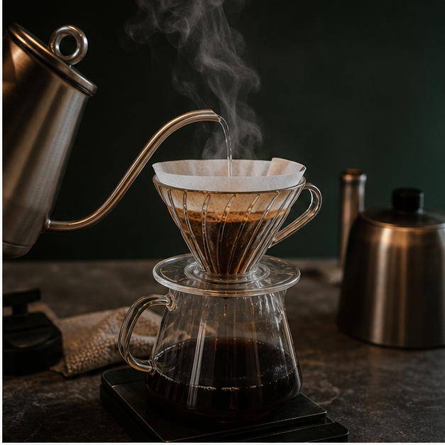
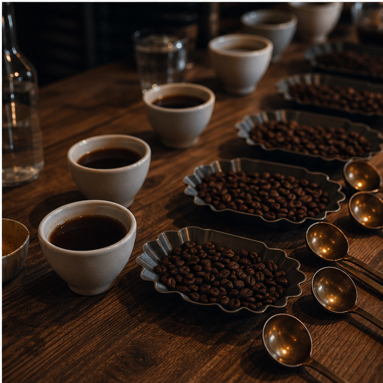

slow bar
Северный фильтр
Чистая чашка с нотами цитруса, трав и сухофруктов. Готовим через V60 или Kalita.
290 ₽specialty coffee · breakfast · coffee evenings
Камерная кофейня с фильтр-баром, спокойными завтраками и вечерними кофейными сетами. Здесь кофе не торопят: зерно подбирают под настроение, а посадку держат свободной.
Зал
SEVER сделан как маленькая комната: приглушенный свет, длинная стойка, несколько столов у окна и бариста, который помнит, что вы брали в прошлый раз.

Вечера
Пробуем два напитка, домашний десерт и зерно недели. Можно прийти без опыта: бариста помогает выбрать вкус и объясняет все просто.
Кофейный паспорт
Flat white, раф без сиропа, капучино на классическом зерне.
Фильтр с кислотностью, гостевое зерно, ягодное послевкусие.
V60 за стойкой, разговор с бариста и чашка без спешки.
Визит
Напишите в Telegram: напиток, время и имя. Мы подготовим заказ к вашему приходу или оставим место у окна.